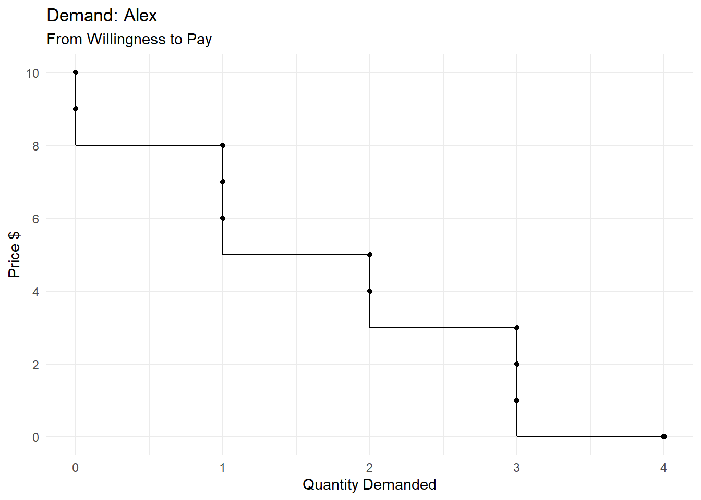

| Donut | Willingness to Pay | ||||
|---|---|---|---|---|---|
| Alex | Barbara | Chris | David | Elena | |
| 1st | 8 | 10 | 6 | 9 | 4 |
| 2nd | 5 | 9 | 5 | 7 | 2 |
| 3rd | 3 | 7 | 4 | 4 | 0 |
| 4th | 0 | 4 | 2 | 1 | -2 |
6 Welfare Analysis
6.1 Measuring the benefits from consumption
We need to measure the benefit that people get from the consumption of various goods and services. A simple approach is to ask people about their willingness to pay for those goods and services.
Consider the following example: There’s a town with only five donut consumers: Alex, Barbara, Chris, David and Elena. Nobody consumes more than four donuts per day. Each person’s willingness to pay for the first donut of the day, the second donut, etc., are shown in Table 6.1, in dollars.
I am assuming that people enjoy an additional donut less the more donuts they have already consumed.
6.1.1 Where does demand come from? An Example.
The willingness to pay data in Table 6.1 leads us directly to the individual demand schedules for Alex, Barbara, Chris, David and Elena, and also the aggregate demand schedule (also called the market demand schedule and the total demand schedule).
Please use the sliding controls on Table 6.2 to see it in its entirety.
| Price | Quantity Demanded (Donuts) | |||||
|---|---|---|---|---|---|---|
| Alex | Barbara | Chris | David | Elena | Aggregate | |
| 10 | 0 | 1 | 0 | 0 | 0 | 1 |
| 9 | 0 | 2 | 0 | 1 | 0 | 3 |
| 8 | 1 | 2 | 0 | 1 | 0 | 4 |
| 7 | 1 | 3 | 0 | 2 | 0 | 6 |
| 6 | 1 | 3 | 1 | 2 | 0 | 7 |
| 5 | 2 | 3 | 2 | 2 | 0 | 9 |
| 4 | 2 | 4 | 3 | 3 | 1 | 13 |
| 3 | 3 | 4 | 3 | 3 | 1 | 14 |
| 2 | 3 | 4 | 4 | 3 | 2 | 16 |
| 1 | 3 | 4 | 4 | 4 | 2 | 17 |
| 0 | 4 | 4 | 4 | 4 | 3 | 19 |
And each demand schedule can be graphed to give its corresponding demand curve.

Where does demand come from? Another Way.
A Graphical Measure of Consumers’ Happiness.
A super quick detour into philosophy In our example, when the prevailing market price of a donut is $3.00, 14 donuts are consumed by Alex (3), Barbara (4), Chris (3), David (3), and Elena (1). And their total willingness to pay is $84. Under our assumptions, willingness to pay measures happiness, in the case of an individual. For example, Barbara is willing to pay $10 for her first donut of the day and under our assumptions that is a good measure of the happiness she gets But is the total willingness to pay of Alex, Barbara, Chris, David, and Elena a good measure of their collective happiness?
6.1.2 A super quick detour into philosophy
We understand what the happiness of an individual means but it is unclear what the happiness of a group of individuals means. In our discussion, we rely on a philosophical doctrine called utilitarianism. Utilitarianism is the idea that: An individual’s happiness can be measured and expressed in numbers Happiness numbers are comparable (interpersonal comparability) The happiness of a group of people is a meaningful thing and … … can be numerically measured by simply adding the happiness numbers of the individual members of the group What The Demand Curve Says About Happiness Consumer Surplus
6.2 Measuring the costs of production
Rational sellers maximize profit Key Assumption: A profit-maximizing producer will produce those units of output—and only those units of output—that cost no more to produce than the prevailing market price for one unit of the commodity. This simple idea establishes a link between the costs of production and supply. Where does supply come from? Assume a town with four donut sellers: Frank, Ginny, Heather, and Irma. None of them makes more than five donuts in a day Each seller’s cost of production for each donut is shown in dollars I assume that the production cost of an additional donut increases as the amount produced increases Where does supply come from? First Look Where does supply come from? Second Look The supply curve can be a graphical measure of production costs Supply Curve and Production Cost Producer Surplus
Recap: The gains from consumption and the costs of production What The Demand Curve Says About the Benefits Enjoyed by the Buyers Consumer Surplus What the Supply Curve Says About the Costs Endured by the Sellers Producer Surplus Market Efficiency Recap: Where does demand come from? Recap: Where does supply come from?
6.3 Measuring the net gain from economic activity: Benefits - Costs
6.3.1 Equilibrium
We have shown that the price will be $4, and the quantity bought will be 13 Alex buys 2 donuts; Barbara 4; Chris 3; David 3; and Elena 1 These are the people who like donuts the most Their total happiness = 10 + 9 + 9 + 8 + 7 + 7 + 6 + 5 + 5 + 4 + 4 + 4 + 4 = $82 There is no way to distribute 13 donuts among the five people in a way that generates more happiness/willingness-to-pay than $82 Equilibrium: Sellers’ Production Costs We have shown that the price will be $4, and the quantity sold will be 13 Frank sells 5 donuts; Ginny 5; Heather 1; and Irma 2 These are the least-cost producers The total cost = 1 + 1 + 1 + 2 + 2 + 3 + 3 + 3 + 4 + 4 + 4 + 4 + 4 = $36 There is no way to get 13 donuts produced so that the production cost would be less than $36
6.3.2 Optimum
6.3.3 Equilibrium is Optimum
The equilibrium outcome generates $82 of benefits and $36 of costs, for a total surplus of $46 There is no other outcome that has a higher total surplus
Next, I will demonstrate this result again, in a different way What’s the Optimum Outcome? Suppose you were a well-intentioned dictator How many donuts would you want made? Which producers would you pick to make the donuts? Which consumers would you pick to consume the donuts? What’s the Optimum Outcome? You are Vladimir, a well-intentioned dictator You want the production to be done as cheaply as possible You want to consumption to generate as much happiness as possible Donut #1: You’ll tell Ginny to make it (cost = $1); You’ll tell Barbara to eat it (benefit = $10); Surplus = $9 What’s the Optimum Outcome? Donut #2: You tell Ginny to make it (cost = $1); You tell Barbara to eat it (benefit = $9); Surplus = $8 Donut #3: You tell Irma to make it (cost = $1); You tell David to eat it (benefit = $9); Surplus = $8 … and so it goes on, till you reach … Donut #13: You tell Frank to make it (cost = $4); You tell Elena to eat it (benefit = $4); Surplus = $0
What’s the Optimum Outcome? Had you ordered the production and consumption of the 14th donut, the cost would have been no less than $5 and the benefit would have been no more than $3 So, the surplus from the 14th donut would have been -$1 Negative! So, you’ll stop at the 13th donut
What’s the Optimum Outcome? Therefore, the optimum outcome would be to order the production and consumption of 13 donuts The producers would be Frank 5 donuts; Ginny 5; Heather 1; and Irma 2 The consumers would be Alex 2 donuts; Barbara 4; Chris 3; David 3; and Elena 1 This is the same as the equilibrium outcome!
The Theory of Demand and Supply The theory of demand and supply is super simple It assumes perfect competition, the absence of externalities, and that buyers and sellers are perfectly informed and rational So, it is not surprising that the equilibrium outcome is unimprovable The real world has plenty of inefficiencies Nevertheless, the theory of supply and demand and the welfare analysis of the market outcome is considered by most economists to be a useful starting point in any policy analysis Total Surplus Key Definition: Total Surplus is a monetary measure of the net gain to society from the production and consumption of a good or service. So, Total Surplus = Consumers’ Total Benefit – Producers’ Total Cost
Total Surplus = Benefit – Cost Total Surplus = Benefit – Cost MARKET EFFICIENCY How do we judge whether an economy is functioning efficiently? We need to measure the total benefit from consumption. Then we need to subtract the total cost of production. Therefore, a good measure of an economy’s efficiency is its total surplus. Key Definition: An economic outcome is efficient if there is no feasible way to make the total surplus any higher. Total Surplus = Benefit – Cost MARKET EFFICIENCY How do we judge whether an economy is functioning efficiently? One measure of efficiency is the total well-being of all participants in the economy. These are either buyers or sellers, and their total well-being consists of consumer surplus and producer surplus. Therefore, a good measure of an economy’s efficiency is its total surplus. Key Definition: An economic outcome is efficient if there is no feasible way to make the total surplus any higher. MARKET EFFICIENCY Consumer surplus and producer surplus may be used to address the following questions: Is the free market system a good way of running our economy? Could we design a better system? Consumer and Producer Surplus Consumer Surplus = buyers’ total benefit – Amount paid by buyers
and
Producer Surplus = Amount received by sellers – sellers’ total cost Total Surplus Key Definition: Total Surplus is a monetary measure of the net gain to society from the production and consumption of a good or service. So, Total Surplus = Consumers’ Total Benefit – Producers’ Total Cost
In a market-based economy without taxes and subsidies, Total Surplus = Consumer Surplus + Producer Surplus Total Surplus Total Surplus (in a market-based economy without taxes/subsidies) = Consumer surplus + Producer surplus = buyers’ total benefit – Amount paid by buyers + Amount received by sellers – sellers’ total cost Total Surplus Total Surplus (in a market-based economy without taxes/subsidies) = Consumer surplus + Producer surplus = buyers’ total benefit – Amount paid by buyers + Amount received by sellers – sellers’ total cost = buyers’ total benefit – sellers’ total cost = Total Surplus Consumer and Producer Surplus in the Market Equilibrium Consumer and Producer Surplus in the Market Equilibrium The Best Feasible Outcome What if we produced less than the equilibrium amount? What if we produced more than the equilibrium amount? What if we produced more than the equilibrium amount? Market Efficiency We just saw that there is no feasible way to generate a higher total surplus than the total surplus obtained in the equilibrium outcome under perfect competition. That is, the equilibrium outcome under perfect competition is efficient.
MARKET EFFICIENCY Three Insights Concerning Market Outcomes Free markets allocate the goods produced to the buyers who value them most highly, as measured by their willingness to pay. Free markets allocate production of goods to those who can produce them at least cost. Free markets produce the quantity of goods that maximizes total surplus. In other words, no economic system will generate more total surplus than the perfectly competitive market system’s equilibrium outcome. The Invisible Hand We pursue our self-interest, not the social interest. It is, therefore, natural to think that the free market would lead us to chaos. And yet, as we just saw, the free market outcome is unimprovable.
6.3.4 Market Efficiency: Adam Smith and the Invisible Hand
This idea was most famously proposed by Adam Smith (1723 – 1790), the father of modern economics. The Invisible Hand …[E]very individual … neither intends to promote the public interest, nor knows how much he is promoting it. … [H]e intends only his own security; and by directing that industry in such a manner as its produce may be of the greatest value, he intends only his own gain, and he is in this, as in many other cases, led by an invisible hand to promote an end which was no part of his intention. Nor is it always the worse for the society that it was no part of it. By pursuing his own interest he frequently promotes that of the society more effectually than when he really intends to promote it. I have never known much good done by those who affected to trade for the public good. The Wealth of Nations, Adam Smith, 1776
6.3.6 Market Failure
But markets do fail However, markets can go wrong Market Power Externalities Fairness Market Failure: MONOPOLY Our discussion was limited to perfect competition If a market system is not perfectly competitive, firms may have market power. Market power is the ability of a seller to influence prices. The existence of market power can cause markets to be inefficient. Market Failure: EXTERNALITIES Externalities are created when trade between a buyer and a seller affects individuals other than the buyer and the seller. cause total surplus in a market to depend on more than just the benefit to the buyers and cost to the sellers. When buyers and sellers do not take externalities into account when deciding how much to consume and produce, the equilibrium in the market can be inefficient. Market Failure: FAIRNESS In addition to market efficiency, a society might also care about equity – the fairness of the distribution of well-being among the various buyers and sellers. The free market economic system is efficient but not necessarily fair. Health Care: Example of Market Failure In most advanced countries, government policies regarding health care routinely disregard the idea that free markets are best In the United Kingdom, the government builds hospitals, hires doctors and nurses, buys pharmaceutical drugs, and provides medical care to all residents Patients get no bills; tax revenues are used to pay all costs Fees of private doctors are paid by the government Performance indicators are high Costs are low There is virtually no clamor for privatization Video: Scroogenomics Heard the one about the economist who gave cash as a Valentine’s Day gift? Scrooge alert: Your holiday spending may result in an economic loss by Paul Solman, PBS Newshour, December 23, 2013.